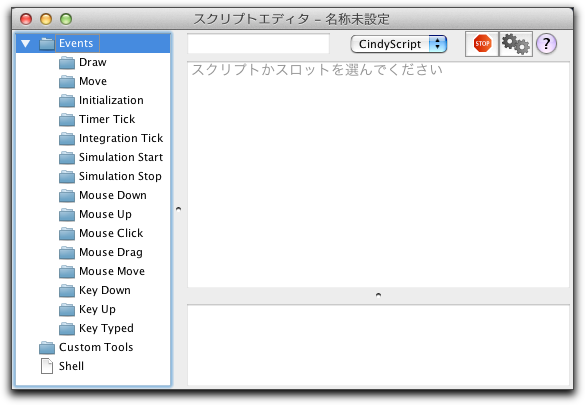
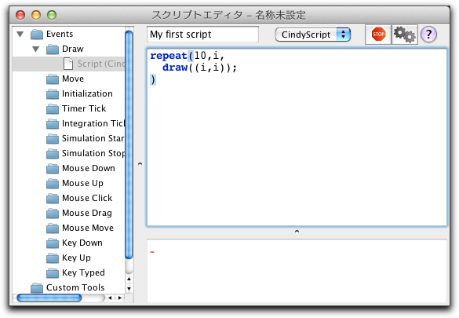

プログラムコードの入力
CindyScript のコードを入力するためのエディタは、メニューの スクリプト/CindySript にあります。この項目を選ぶと、プログラムコードを編集するウィンドウが開きます。それぞれのファイルは個々のプログラムエディタウィンドウを持っています。最初は次のように表示されます。
 |
| スクリプトエディタ |
このウィンドウはいくつかの構成要素からできていますが、少し説明が必要でしょう。ウィンドウの主要部分は、中央右の大きな白のスペースです。これが、スクリプトを書く部分です。ウィンドウの左側に"ツリー表示"があります。そこでスクリプトが実行されるべき項目(これをスロットといいます)を選びます。スクリプトを書く第一歩は、この中から適するスロットを選ぶことです。
右下の部分はエディタがメッセージを表示する場所で、右上にはいくつかのコントロールと、スクリプトの名前を入力するフィールドがあります。
小さなスクリプトを入力する
スクリプトを入力するための第一歩は、そのスクリプトを実行するスロットを選ぶことです。そのために、左側に表示されている"Events"のうちの一つをクリックします。 ここで "Draw" を選んでみましょう。 Draw スロットで入力されたスクリプトは画面上で描画がされるとき、いつでも実行されます。このスロットを選ぶと、ウィンドウの大きな空白の部分(メインウィンドウ)にスクリプトを書けるようになります。「クリックしてスクリプトを書き始めてください」と表示されているときにメインウィンドウでクリックすればテキストが書けます。例として、次の短いスクリプトを入力し、タイトルに "My first script" と書き、メインウィンドウに図のようにスクリプトを書きましょう。
 |
| テキスト入力 |
歯車アイコンのボタンを押すとスクリプトが実行されます。この例では、10個の緑色の点が打たれます。また、シフトキーとEnterキーを同時に押す（Shift+Enter）ことにより実行することもできます。
スロット
シンデレラのすべてのスクリプトは、それが実行されるスロットと関連しています。シンデレラのスクリプトはプログラムの実行時に動作するので、同じスクリプトが何回か実行されることもあり得ます。それぞれのスロットの意味は次の通りです。
- Draw: 新しい画面が作られる前にこのスロットが実行されます。このなかのスクリプトは頻繁に実行されます。幾何学的要素がドラッグされるたびに自動的に更新されなければならない典型例です。
- Move: このスロットは "Draw" よりも頻繁に呼ばれます。自由要素の位置が内部的に変わるたびに、これは実行されます。一般に、画面が書き換えられるより多く起こります。 時々、"Draw" スロットに入れたスクリプトが奇妙な、予想外の結果を引き起こすことがあります。そのようなとき、"Move" スロットに入れるとよいことがあります。
- Initialization: スクリプトエディタのプレイボタンが押されると、このスクリプトが１度だけ実行されます。変数の値や点の位置を初期状態に戻すのに便利です。
- Timer Tick: スクリプトがこのスロットに含まると、幾何の画面に アニメーション コントローラが(まだ表示されていなければ)現れます。このアニメーションコントローラのプレイボタンが押されると、このスロットのスクリプトが数ミリ秒ごとに実行されます。
- Integration Tick: このスロットは物理シミュレーションだけに関係します。このスロットのスクリプトは物理シミュレーションエンジンが、質点の位置と力に関する情報を必要とするときにいつでも実行されます。ユーザーが力や位置エネルギーをコントロールしたいときに用います。
- Simulation Start: アニメーションコントローラが "Stop" から "Play" に変わるときこのスクリプトが実行されます。アニメーションの初期状態に入るのによいスロットです。
- Simulation Stop: アニメーションコントローラが "Play" から "Stop" に変わるときこのスクリプトが実行されます。アニメーションの結果を評価するのによいスロットです。
- Mouse Down: このスロットと以下の3つのスロットは、CindyScript のインターフェースの下でのプログラミングに非常に役立ちます。このスロットのスクリプトは、マウスボタンが押されたとき実行されます。
mouse()関数によって、現在のマウスの座標がスクリプトに読み込まれます
- Mouse Up: このスロットのスクリプトは、マウスボタンが離されたとき実行されます。
- Mouse Click: このスロットのスクリプトは、マウスがクリックされたとき実行されます。
- Mouse Drag: このスロットのスクリプトは、マウスがドラッグされている間実行されます。.
- Key Typed: このスロットのスクリプトは、キーボードのキーが押されたとき実行されます。このスロットはユーザーがキーボードを使って操作をするときに便利です。キーボードで打たれた文字列は
key()関数とkeydownlist()関数によってアクセスできます。
- Key Down: このスロットのスクリプトは、キーボードのキーが押されたとき、正確にはキーが下に下がったとき実行されます。
- Key Up: このスロットのスクリプトは、キーボードのキーが離されたとき、正確にはキーが上にあがったとき実行されます。
コントロールボタン
スクリプトエディタウィンドウの上部には、スクリプトの実行/停止ボタン、スクリプトの名前を入力するタイトルフィールド、そして、異なる言語に切り替える(現在、CindyScriptだけが文書化されます)ボタンがあります。
 |
| スクリプトコントロール |
これらのコントロールのうち、一番重要なのはおそらく "Play" ボタンでしょう。このボタンが押されると、すべてのスクリプトが解析され、プログラムが開始されます。プログラムを変更するとPlayボタンを押すたびにそれが有効になります。また、 shift と enter キーを同時に押せば、プレイボタンを押すのと同じことになります。
プログラムの実行が止まったように見えるときは、スクリプトが無限ループから抜け出せなかったり、単に長すぎる計算を実行しているだけかもしれません。"Stop"ボタンは一種の非常手段として押すことができます。
左側の小さなタイトルフィールドは、スクリプトに個別の名前をつけるのに用いられます。
最後に、スクリプトのために言語を選ぶドロップダウンメニューがあります。 CindyScript でプログラミングをするのに必要な情報は、このマニュアルで見つけられるでしょう。しかし、"Python" や "JRuby" "Core Cinderella geometry language" でプログラムすることも可能です。このオプションはそのときのためのものです。
Page last modified on Monday 05 of March, 2012 [12:15:44 UTC].
The original document is available at
http://doc.cinderella.de/tiki-index.php?page=Entering%20Program%20CodeJ